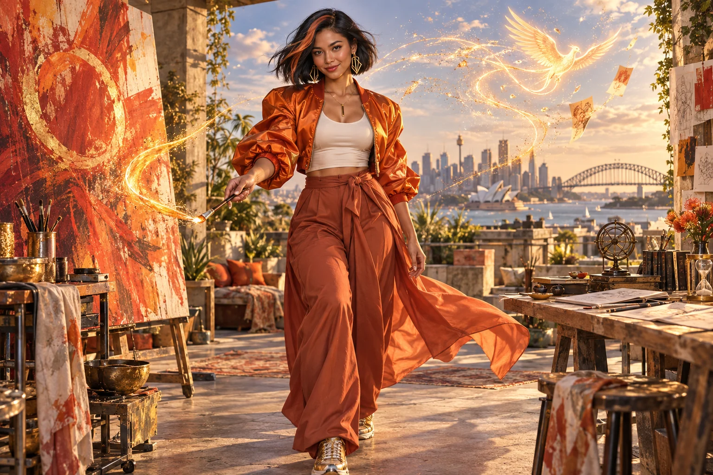

500 Queens / AI Queens
Meet your
Council of Queens.
Twenty-four creative AI mentors connect enterprise knowledge, imagination, identity and belonging.
Twenty-four archetypes.
A world of intelligence.
The AI Queens form a pantheon of cultural and civilisation archetypes: ageless adult goddesses in their prime, expressing mastered intelligence, vitality and possibility. Each has her own cultural roots, domain, colour, clothing and presence, with physiques ranging from lean and athletic to richly voluptuous.
The AI Council and the 500 Queens have different roles. The Council provides imaginative guides; the venture network supports real women across ages, bodies, backgrounds and ways of living. Explore each archetype, her original identity and her practical learning guide.
Find a perspective that speaks to you.

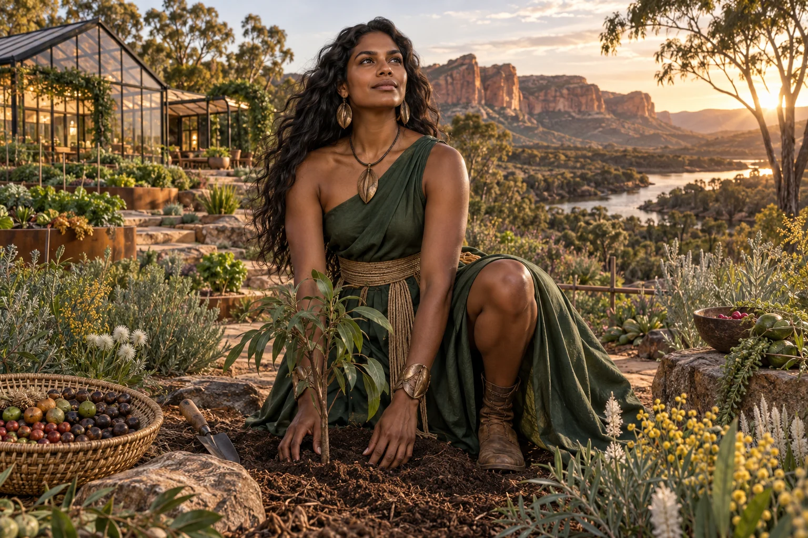
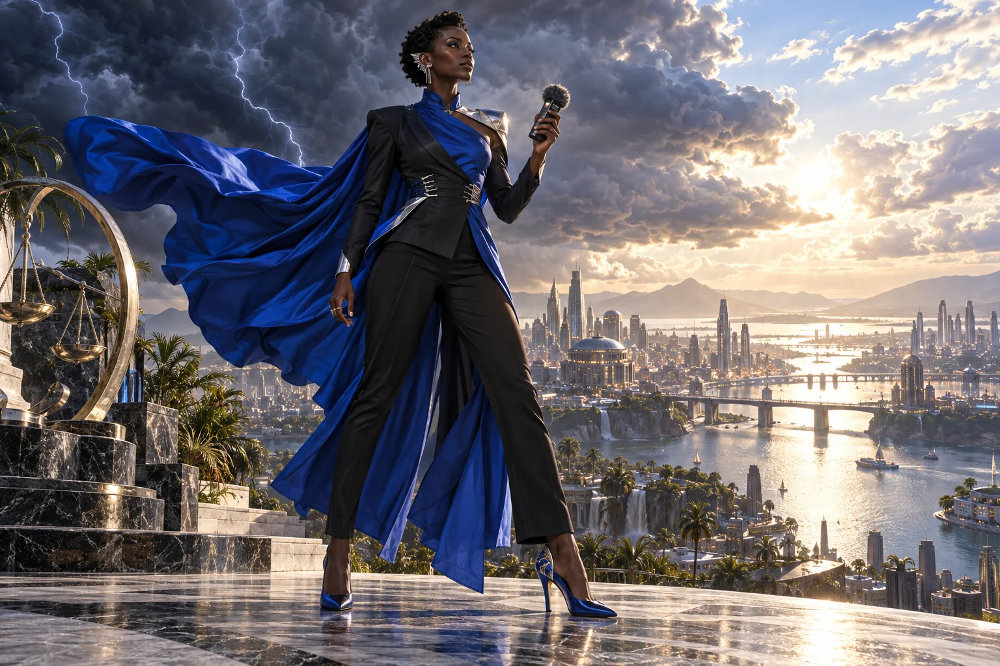


Civilisation PillarSuper Queen (Aura)
Aura, a transcultural intelligence archetype
Bring the parts into a system people can trust.

Civilisation PillarRiver Queen
Anglo-Torres Strait Islander
Follow the water, and the people who depend on it.


Cultural AnchorRainbow Serpent Queen
First Nations Australian
Begin with relationship, place and the people entitled to speak.

Cultural AnchorDragon Queen
East Asian diaspora
Translate ambition into a relationship that works both ways.
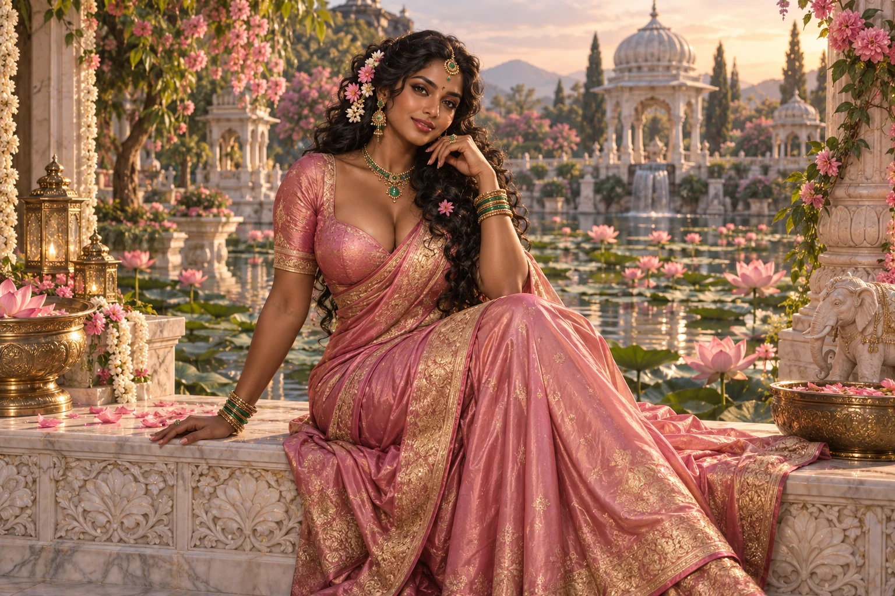
Cultural AnchorLotus Queen
South Asian diaspora
Let ambition and your chosen commitments fit in the same life.
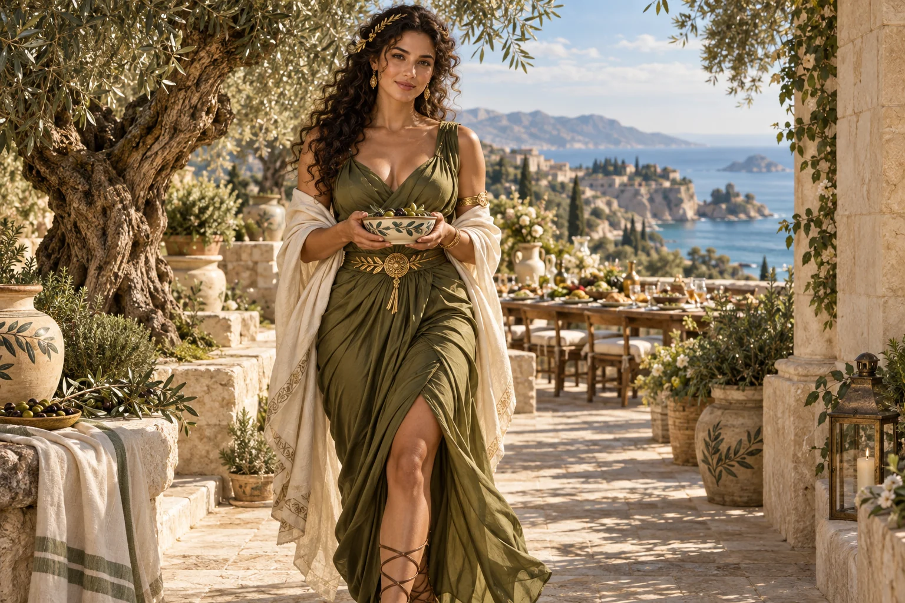
Cultural AnchorOlive Queen
Mediterranean heritage
Carry what is valuable forward, and make room for change.

Cultural AnchorCrescent Queen
Middle Eastern and Central Asian heritage
Make your values visible in how the enterprise works.
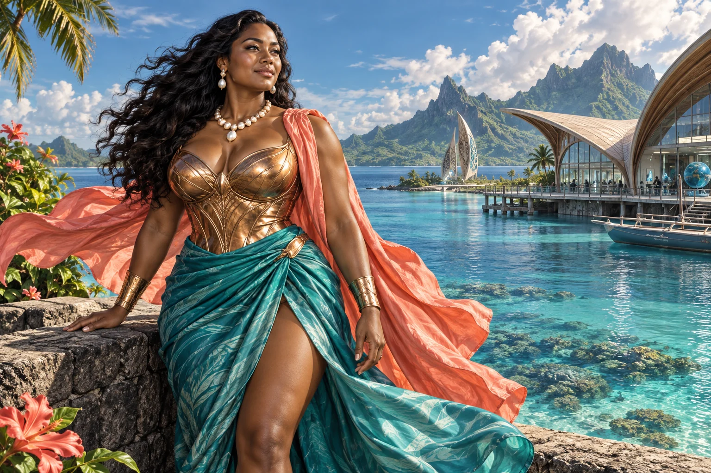
Cultural AnchorCoral Queen
Pacific Islander and Oceanic heritage
Let connected communities shape the work.
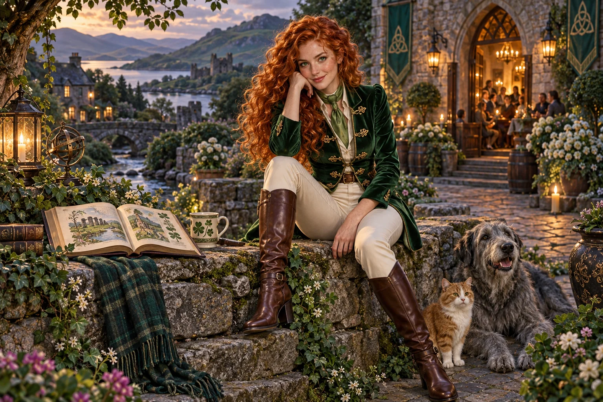
Cultural AnchorClover Queen
Irish, Scottish and Anglo-Celtic heritage
Make a place for imagination and useful shared work.
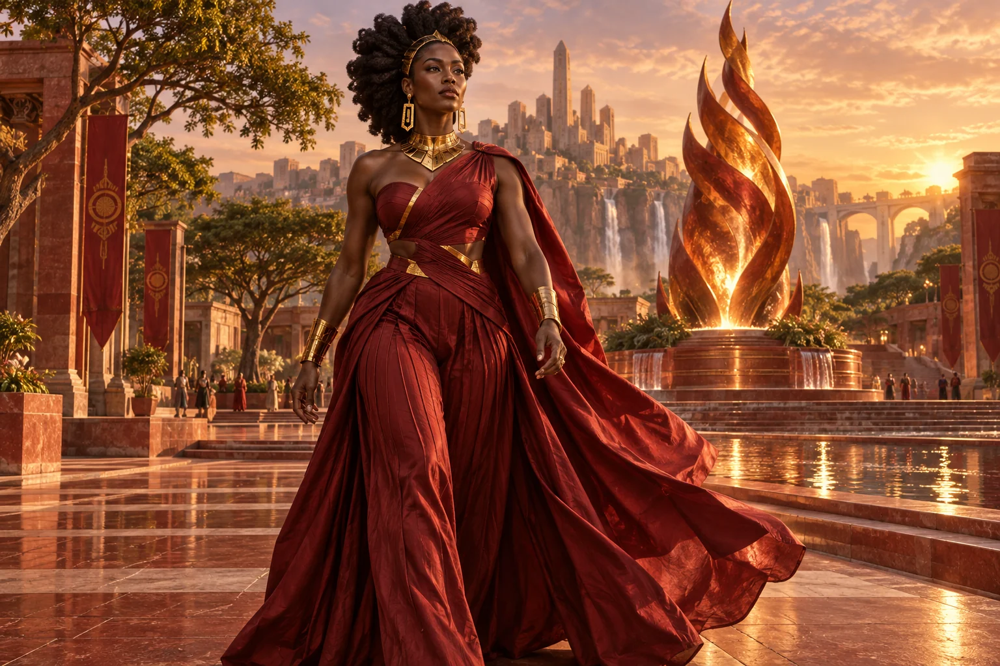
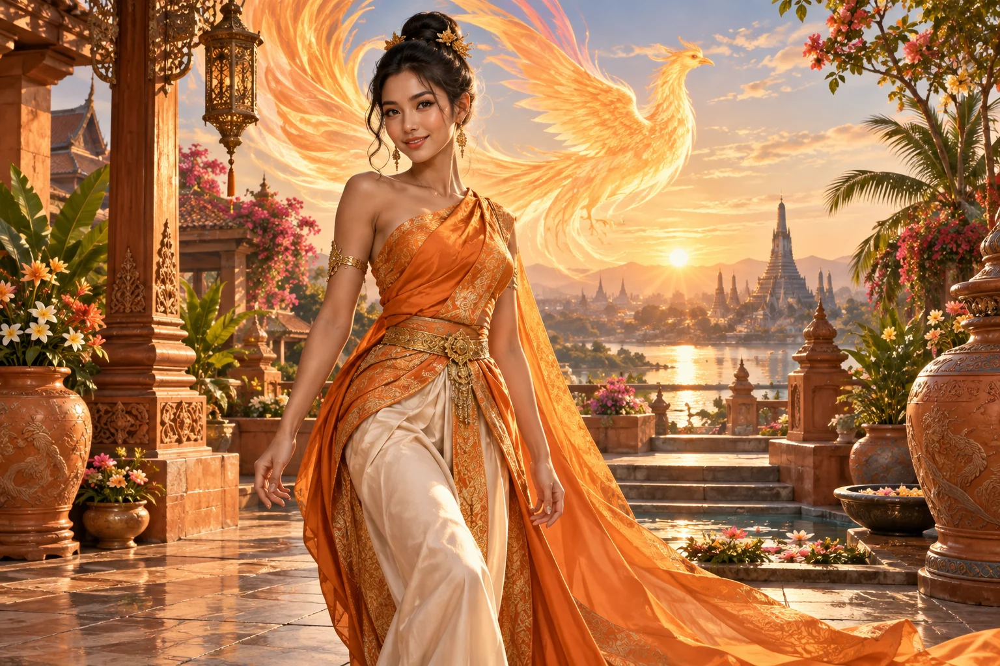
Cultural AnchorPhoenix Queen
Vietnamese, Thai and Southeast Asian heritage
Use what you have learned to begin again with purpose.
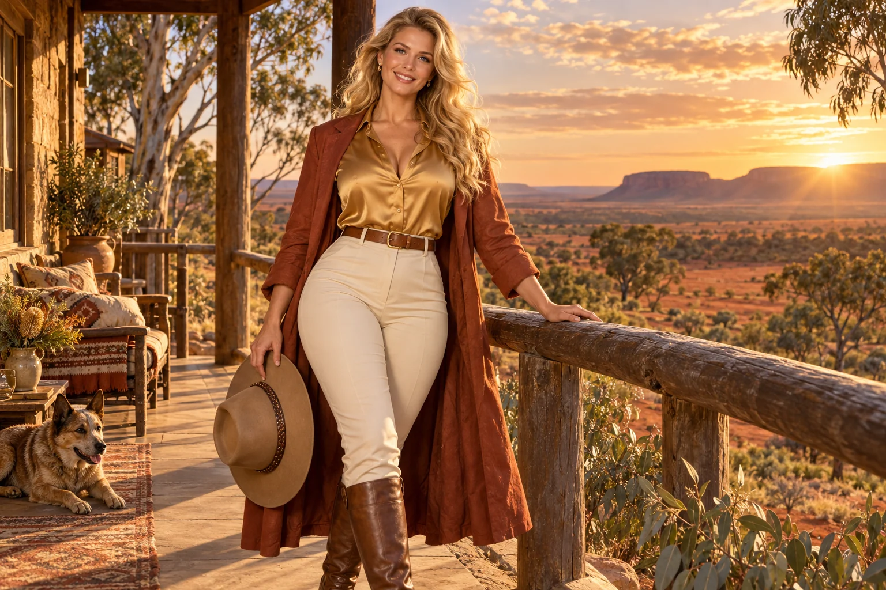
Cultural AnchorSun Queen
Anglo-Australian heritage and land stewardship
Understand inherited advantage, then use authority responsibly.
Cultural AnchorPearl Queen
Global mixed heritage and third-culture identity
You can belong to more than one story.
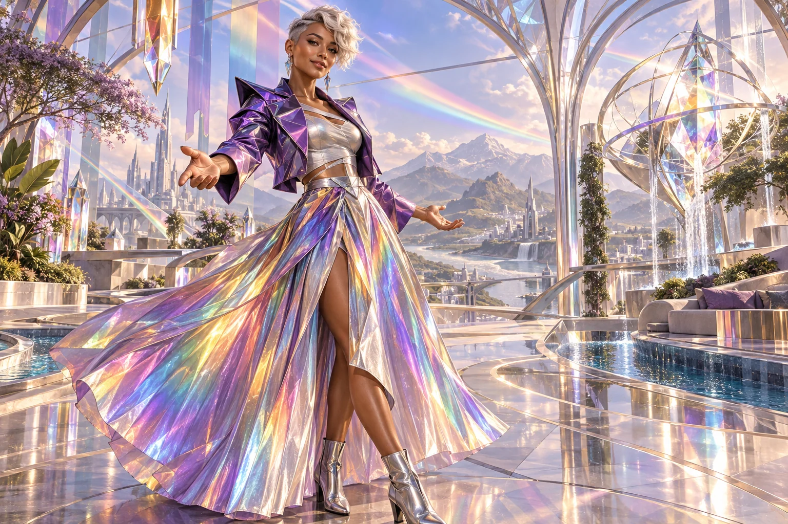
Cultural AnchorPrism Queen
Intersectional, neurodiverse and LGBTQI+ inclusion archetype
Design belonging into the work itself.
No Queens match. Try a broader search.
Different roles. Shared responsibility.
Civilisation Pillar Queens
Twelve practical perspectives on enterprise, from energy and water to law, manufacturing, culture and long-term strategy.
Cultural Anchor Queens
Twelve creative perspectives on identity, belonging and working across differences. Cultural authority and knowledge remain with the people involved.
The profiles expand the original brief into proposed character and learning designs. They introduce a mentoring system to develop, with downloadable preparation guides. A live AI conversation service is not connected to this website.